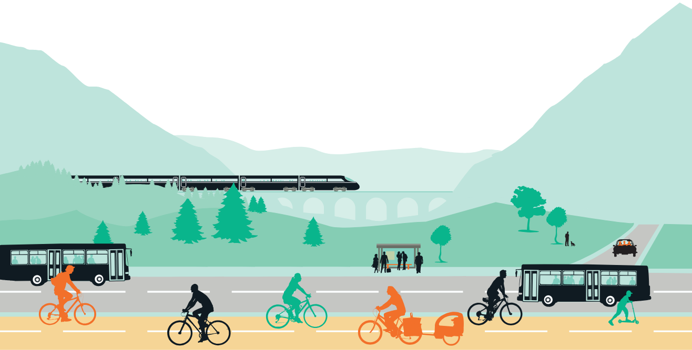

Aujourd’hui, la réponse unique à nos besoins de déplacement est la voiture individuelle. Pourtant, elle transporte également de nombreux fardeaux : pollution locale, changement climatique, coût d’utilisation très élevé (environ 4000€/an), consommation d’espace précieux en ville (parking, voirie…). Face à ce constat, Mobil’idées a été créée en 2007 pour agir dans les Hautes-Alpes pour une mobilité de proximité et des déplacements doux.
Téléchargez nos status
Développer l’utilisation du vélo : écologique, économique, silencieux et bon pour la santé physique ET mentale, le vélo doit revenir dans nos villes et villages. Mobil’idées agit donc pour le promouvoir auprès de la population, pour le rendre plus accessible et milite auprès des pouvoirs publics pour faciliter son développement.
Faire émerger une alternative à la voiture individuelle. Parce que le vélo n’est pas la solution à tous les types de déplacements, Mobil’idées cherche à promouvoir toutes les alternatives de mobilité : covoiturage, trains, cars, bus ou encore autostop. Développer l’intermodalité pour un déplacement plus écologique et économique. Bref, mieux se déplacer.
Notre rapport d’activité 2021 : Cliquez ICI
Notre rapport d’activité 2022 : Cliquez ICI
Le principe : vous pouvez accéder à un atelier équipé des outils dédiés aux vélos, et à l’accompagnement d’un permanent de Mobil’idées pour vous apprendre à réparer votre vélo. Vous pourrez vous former peu à peu à réparer et entretenir au mieux votre monture ! Notez bien que nous ne réparons pas de vélo nous-même (les vélocistes le font très bien), nous vous apprendrons à le faire. Cet atelier sert aussi à récupérer des vieux vélos, voués à devenir des déchets. Ces vieilles carcasses nous sont données par des particuliers ou par des déchetteries. Si possible, nous réparons le vélo. Si non, nous le désossons pour en faire des pièces détachées pour l’atelier Vente de vélos d’occasion : les vélos remis en état par Mobil’idées sont revendus à des prix modiques (de 30 à 60 euros généralement). En complément, nous organisons des bourses aux vélos d’occasions 2 à 3 fois par an.
Mobil’idées dispose d’un éventail d’animations pour faire vivre l’écomobilité sur les événements grand public, foires, festivals… Manège à vélo, stand de sensibilisation à l’écomobilité, vélos générateurs d’énergie, atelier participatif de réparation de vélo, essais de vélos rigolos… Pour plus de détails, visitez la page dédiée.
Nous mettons à profit le système médiatique et politique pour mettre certains sujets sous le feu des projecteurs. Sur les questions liées au vélo ou à la mobilité durable, nous menons des actions telles que diagnostic participatif, organisation de débats publics, publication de livres de propositions etc. Mobil’idées se place en tant que porte-paroles des usagers du vélo et des usagers des transports en commun, et donc en interlocuteur des pouvoirs publics sur ces questions.
